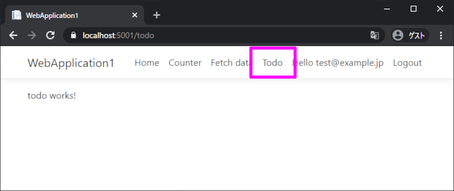

前回の続きです。
今回は、認証必須ページの作成をして行きます。
前回
TODO画面 を作成
ログインしていないと開けない TODO画面 を作成します。
まず、Angular CLI を使って「todo」という名前のコンポーネントを生成します。
ClientApp フォルダ内で下記コマンドを実行すると、必要なファイルが作成されます。
1 | ng generate component todo |
ですが Visual Studio を使った Angular の場合は、エラーが発生します。
エラー
More than one module matches. Use skip-import option to skip importing the component into the closest module.
その場合、メインモジュールの名前を指定すると解消されます。
1 | ng generate component todo --module app |
TODO画面にログイン必須の設定を付与
ログイン必須の設定を付与して、ブラウザから開けれるようにします。
「app.module.ts」の forRoot に todo画面 を追加します。
1 | imports: [ |
その時、canActivate に「AuthorizeGuard」を付与することで ログイン必須のページに設定する事が出来ます。
TODO画面へ遷移するリンクを追加
TODO画面を開けれるように メニューにリンクを追加します。
「WebApplication1\ClientApp\src\app\nav-menu\nav-menu.component.html」を修正します。
1 | <ul class="navbar-nav flex-grow"> |
試しにデバッグ実行をして、TODO画面を開いてみます。
ログインしていない場合はログイン画面が表示され、ログインしている場合は TODO画面 が表示されます。

サーバからデータを取得
自分が持っている TODOデータ をサーバから取得できるようにします。
Todoモデル の作成
クライアント側とサーバ側にTodoモデルを作成します。
クライアント側はTypeScript、サーバ側はC#で作成します。
「WebApplication1\ClientApp\src\app\Todo.ts」
1 | export interface Todo { |
「WebApplication1\Models\Todo.cs」
1 | namespace WebApplication1.Models |
Controller の作成
スキャフォールディングを使って、モデルからコントローラーを作成します。
「Controllers」フォルダを選択し、右クリックから 追加 > 新規スキャフォールディングアイテム を選択します。
「Entity Framework を使用したアクションがある API コントローラー」を選択します。
Todoモデルを使ってコントローラーを作ります。
データベースを更新
パッケージマネージャーコンソールを使って Todoテーブルを作成します。
1 | PM> Add-Migration Todo |
Todoモデルと同じ型の Todoテーブルが作成されました。
ついでに軽くデータを入れておきます。
UserIdは「AspNetUsers」テーブルの Id を使います。
Todoリスト を取得
TodoesController.cs
TodoesController を介して Todoリスト を取得できるようにします。
下記コードで、認証済みのログインユーザーIDが取得出来ます。
1 | var userId = User.FindFirst(ClaimTypes.NameIdentifier).Value; |
取得したユーザーIDを元に、データベースからその人のTODOデータを取得しクライアントに渡します。
「WebApplication1\Controllers\TodoesController.cs」
1 | // GET: api/Todoes |
todo.component.ts
クライアント側の呼び出し処理を書きます。
「WebApplication1\ClientApp\src\app\todo\todo.component.ts」
1 | export class TodoComponent implements OnInit { |
todo.component.html
受け取ったデータを HTML で表示します。
「WebApplication1\ClientApp\src\app\todo\todo.component.html」
1 | <p *ngIf="!todoes"><em>Loading...</em></p> |
動作確認
このように Todoテーブルの値が表示されるはずです。
次回
追加、更新、削除